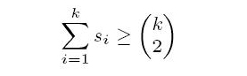
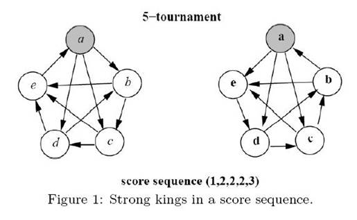

Home Page
F.A.Qs
Statistical Charts
Past Contests
Scheduled Contests
Award Contest
| Online Judge | Problem Set | Authors | Online Contests | User | ||||||
|---|---|---|---|---|---|---|---|---|---|---|
| Web Board Home Page F.A.Qs Statistical Charts | Current Contest Past Contests Scheduled Contests Award Contest | |||||||||
|
Language: The Maximum Number of Strong Kings
Description A tournament can be represented by a complete graph in which each vertex denotes a player and a directed edge is from vertex x to vertex y if player x beats player y. For a player x in a tournament T, the score of x is the number of players beaten by x. The score sequence of T, denoted by S(T) = (s1, s2, . . . , sn), is a non-decreasing list of the scores of all the players in T. It can be proved that S(T) = (s1, s2, . . . , sn) is a score sequence of T if and only if for k = 1, 2, . . . , n and equality holds when k = n. A player x in a tournament is a strong king if and only if x beats all of the players whose scores are greater than the score of x. For a score sequence S, we say that a tournament T realizes S if S(T) = S. In particular, T is a heavy tournament realizing S if T has the maximum number of strong kings among all tournaments realizing S. For example, see T2 in Figure 1. Player a is a strong king since the score of player a is the largest score in the tournament. Player b is also a strong king since player b beats player a who is the only player having a score larger than player b. However, players c, d and e are not strong kings since they do not beat all of the players having larger scores. The purpose of this problem is to find the maximum number of strong kings in a heavy tournament after a score sequence is given. For example,Figure 1 depicts two possible tournaments on five players with the same score sequence (1, 2, 2, 2, 3). We can see that there are at most two strong kings in any tournament with the score sequence (1, 2, 2, 2, 3) since the player with score 3 can be beaten by only one other player. We can also see that T2 contains two strong kings a and b. Thus, T2 is one of heavy tournaments. However, T1 is not a heavy tournament since there is only one strong king in T1. Therefore, the answer of this example is 2.  Input The first line of the input file contains an integer m, m <= 10, which represents the number of test cases. The following m lines contain m score sequences in which each line contains a score sequence. Note that each score sequence contains at most ten scores. Output The maximum number of strong kings for each test case line by line. Sample Input 5 1 2 2 2 3 1 1 3 4 4 4 4 3 3 4 4 4 4 5 6 6 6 0 3 4 4 4 5 5 5 6 0 3 3 3 3 3 Sample Output 2 4 5 3 5 Source |
[Submit] [Go Back] [Status] [Discuss]
All Rights Reserved 2003-2013 Ying Fuchen,Xu Pengcheng,Xie Di
Any problem, Please Contact Administrator